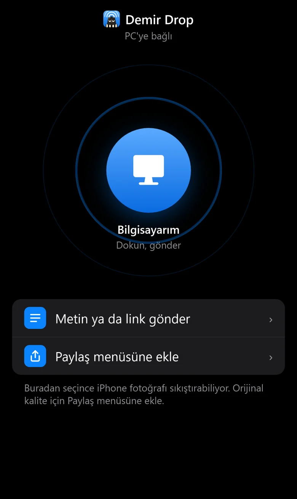
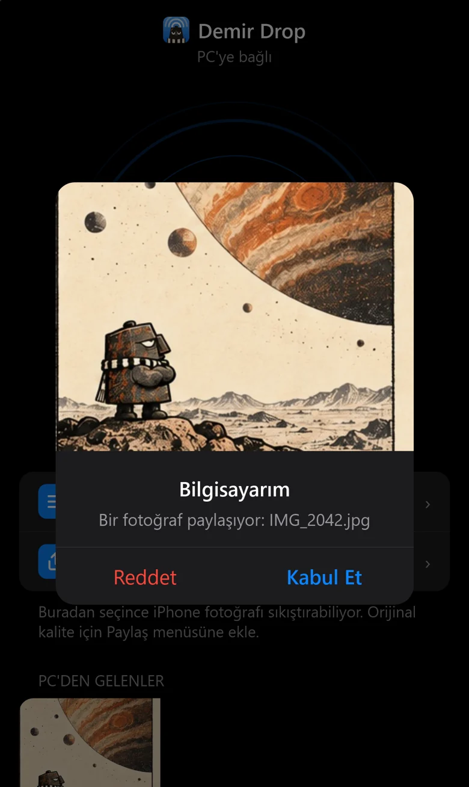
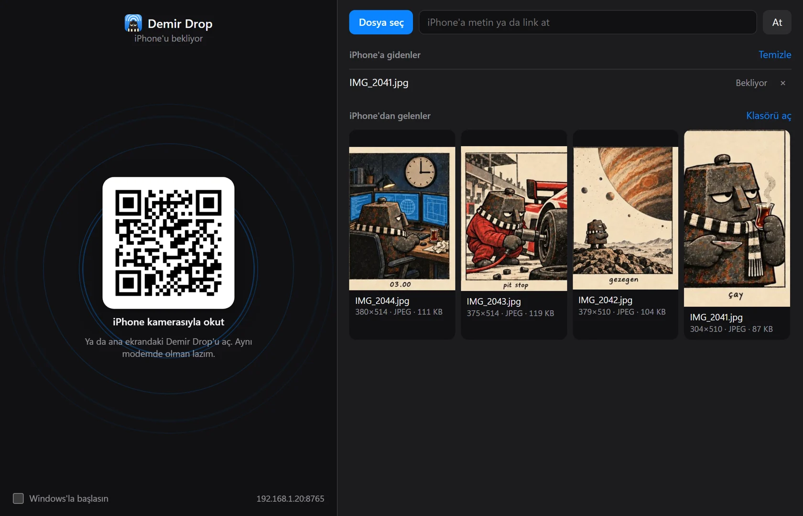
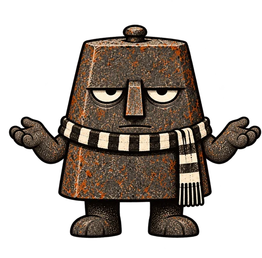

Uygulama yok. Safari yeter.
PC'deki QR'ı kamerayla okutuyorsun, sayfa açılıyor. App Store'dan bir şey indirmiyorsun. Ana ekrana ekleyince ikonu da oluyor.
PC'den bir şey atınca telefonda kart çıkıyor: Kabul Et ya da Reddet. Tanıdık geldiyse sebebi var.


Sağ tıkla, Gönder, iPhone'a At.
Windows'un Gönder menüsüne kendini ekliyor. Telefondan gelenler İndirilenler klasörüne düşüyor, pencerede galeri olarak da duruyor. Metin atarsan PC'nin panosuna gidiyor.

Fotoğrafı bozan biz değiliz.
Demir Drop dosyaya dokunmuyor: ne geldiyse diske o yazılıyor. Çözünürlüğü ve biçimi gönderince yazıyor, kendin de bakabilirsin.
Ama Safari'nin dosya seçicisi HEIC fotoğrafı yolda JPEG'e çevirebiliyor. Orijinali istiyorsan iki iOS kestirmesi var: biri galerideki Paylaş menüsünden PC'ye atıyor, öteki PC'den geleni Fotoğraflar'a kaydediyor.
Kestirmeleri kendin kuruyorsun, adımlar telefon sayfasında yazıyor.
Kurulum
- Zip'i aç, DemirDrop.exe'yi çalıştır
Kod imzası yok, Windows "tanınmayan uygulama" diyebilir. Ek bilgi, yine de çalıştır.
- Güvenlik duvarına izin ver
Bir kere sorar. Yalnızca yerel ağa,
8765portunu açar. - QR'ı iPhone kamerasıyla okut
Telefon Wi-Fi'da ve PC'yle aynı modemde olsun. Olay bu kadar.
Dürüst kısım
Apple'ın ürünüyle yarışmıyor. Sadece Apple'ın gitmediği yere gidiyor.

| Özellik | AirDrop | Demir Drop |
|---|---|---|
| iPhone ile Windows arasında çalışır | — | ✓ |
| Hesap ve bulut gerektirmez | ✓ | ✓ |
| Modem olmadan çalışır | ✓ | — |
| Sayfa kapalıyken de ekrana düşer | ✓ | — |
| Aktarım şifrelidir | ✓ | — |
- Bağlantı şifresiz HTTP. Ev gibi güvendiğin ağda kullan, kafede açma.
- QR'daki adres parola gibi: bilen, sen açıkken ağındaki PC'ye dosya atabilir. Paylaşma.
- iPhone'un AirDrop listesinde çıkmaz, Apple izin vermiyor. Paylaş menüsünde kestirme olarak çıkar.
- Modem PC'ye yeni IP verirse ana ekrandaki ikon ve kestirmeler eski adreste kalır, QR'ı yeniden okut.